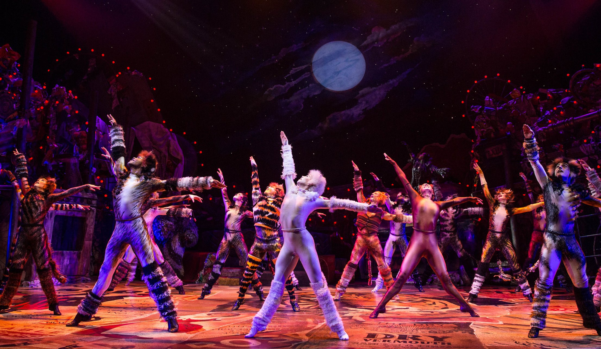
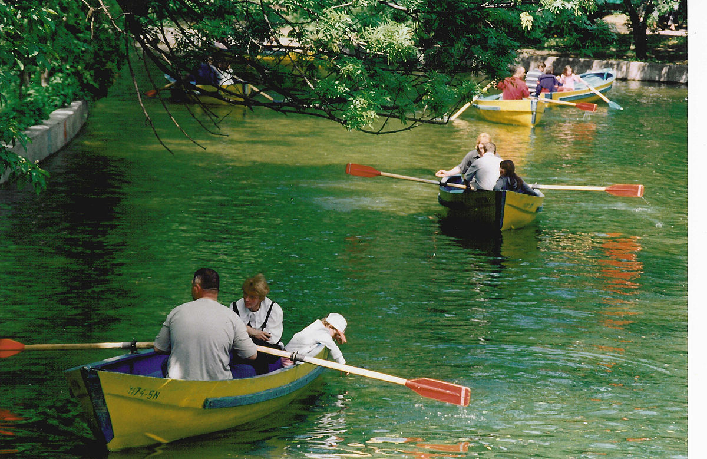

Activiteiten
Waterglijbanen
Zwembad
Durf jij al onze glijbanen aan? We hebben ze van alle soorten en maten dus probeer ze allemaal!
Water Aerobics
Zwembad
Maak nu een reservering bij onze frontoffice om mee bewegen bij onze supergezellige workouts!

Pool Party
Zwembad
Elk weekend hebben wij van 20.00 tot 22.00 onze pool party's. Disco, schuim en zeer veel lol! Elke Zaterdag en Zondag in ons binnen zwembad!
Kidsclub
Theater
Voor de kinderen van 3 tot en met 12 jaar hebben wij een zeer leuke Kidsclub waar we theaterstukjes opvoeren, sminken, samen knutselen en samen dansen met de kidsdisco! Zorg dat uw kind dit niet mist!

Musical
Theater
Actueel de populaire Broadway musical Cats! Engelstalig. Deze spelen we van 20.00 tot 22.00 stipt!
Volleybal
Strand
Kom lekker met ons volleyballen! We hebben volleybal voor de teens van 12 tot 17 en volwassenen. Maak nu een reservering bij onze frontoffice!

Roeibootjes
Strand
Reserveer nu een roeiboot bij onze frontoffice! We hebben boten voor 2 en 4 personen inclusief reddingsvesten!
Zwanenboten
Strand
Reserveer nu een zwaan boot en tijdslot bij onze frontoffice en ga op zwanenavontuur met je familie en vrienden! We hebben boten voor 2 en 4 personen inclusief reddingsvesten!
Wandeling
Bos
Wandel mee met de groep of wandel zelf over onze prachtige bospaden. U zult er geen spijt van krijgen! Maak nu een reservering bij onze frontoffice om met onze gezellige groep mee te wandelen
Speurtocht
Bos
Leer alles over de natuur met onze superleuke speurtocht voor de hele familie! Ga samen met een ranger op pad om de mysteries van het bos te ontdekken. Maak nu een reservering bij onze frontoffice!
Spooktocht
Bos
Mysterieuze dingen gebeuren in ons bos als de zon ondergaat. Durf jij het aan om achter de waarheid te komen? Niet voor kinderen onder de 12. Maak nu een reservering bij onze frontoffice!
 1.jpg)
Boogschieten
Bos
Voel je net als Robin Hood en kom lekker een uurtje boogschieten! Maak nu een reservering bij onze frontoffice!
Huttenbouwen en Avonturen
Bos
Altijd al eens willen leren hoe je een hut moet bouwen en survivallen en het wilt? We hebben huttenbouwen en avonturen voor de kids 3-12 en de teens 12-16! Maak nu een reservering bij onze frontoffice!